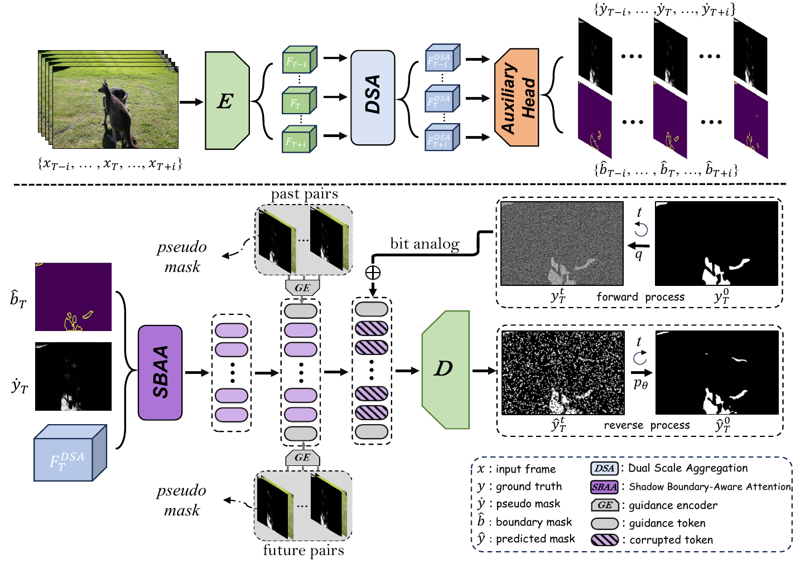

|
VIP Lab, |
|

Biography
Hi there. I'm a first-year PhD student from HKUST-GZ, supervised by prof. Zhu Lei. Before that, I obtained the B.E degree of Computer Science at 2023 from XJTU supervised by prof. Xue Yao in the Smiles Lab. I also collaborated with prof. Li Ping when I exchanged in PolyU, and was a RA collaborated with prof. Zhou Yuyin.
My research areas are various, from normal scenario and medical images, downstream on the segmentation and detection. After tasting hundreds coffes, I will transfer into generalization study and weakly supervised learning.News
Education
| Xi'an JiaoTong University (XJTU) B.E., Computer Science and Technology Period: Aug, 2019 - Jul, 2023 |
|
|
|
The Hong Kong Polytechnic University (PolyU) B.S., Computing (Exchange Programme) Period: Aug, 2021 - Dec, 2021 |
| The Hong Kong University of Science and Technology (HKUST-GZ) PhD Programme Period: Aug, 2023 - present |
|
First-author Works
|
BIGSHA: A New Benchmark and Zooming and Cropping Network for High-Resolution Image Shadow Detection
State: Reject.
Haipeng Zhou,Hongqiu Wang, Zhaohu Xing Lei Zhu Self-Rate: 2 |
|
|  |
Timeline and Boundary Guided Diffusion Network for Video Shadow Detection
State: ACM MM2024 (Oral)
Haipeng Zhou, Hongqiu Wang, Tian Ye, Zhaohu Xing, Jun Ma, Ping Li, Qiong Wang, Lei Zhu,  Self-Rate: 2
Self-Rate: 2
|
|
Distribution Aligned Diffusion and Prototype-guided Network for Unsupervised Domain Adaptive Segmentation
State: RejectHaipeng Zhou, Yuyin Zhou, Lei Zhu Self-Rate: 2 |
ESORDA: Enhance Small Object Representation and Domain Adaption for Mitosis Detection
State: Reject by many trans Haipeng Zhou, Xue Yao  . I give it up. . I give it up.
|
Services
About me
Last updated: Jul, 2024 freecounter